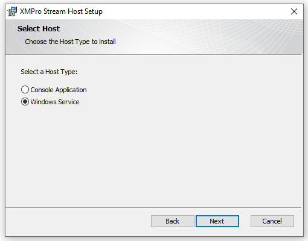

Windows x64
Prerequisites
Downloads
Follow the instructions in the Install Stream Host guide to download the connection profile and installer.
Hardware and Software
XMPro Stream Host requires certain hardware and software specifications in order to install and run. Complete these steps in the 1. Preparation guide:
- Meet the hardware requirements
- Install the software requirements
Initial Steps
Run the executable installer file that you've downloaded as administrator
When the installation wizard opens, click Next

- Read and accept the license agreement by ticking the check box at the bottom and click Next

Click the Change button to choose the location for the Stream Host to be installed
Browse to the directory you would like to use, or use the default, and click Next

Host Type Selection
- Select the host type and click Next

Note
Console Application is recommended for testing purposes.
It will be listed in the Start menu under the name "XMPro Stream Host" and must be manually run as administrator from the Start menu.
Note
Windows Service is recommended for production environments.
It will automatically start after installation completes and the name of the service will be the same as the "Device Name" you specified when you downloaded the Connection Profile file or manually added the name to the installer.
Connection Profile
- Select your preferred setup mode and click Next

Upload a Collection Profile
Follow these steps if you selected Connection Profile:
Click Browse and select the Connection Profile file you downloaded earlier in the guide
In the File Key textbox enter the key used to create the Connection Profile
Click Next and let the wizard install the Stream Host
Note
If you selected Manual, see the section below for instructions on how to set it up.

Manual Settings
If you decide to manually set up the connection settings for the Stream Host, you can find the values you need by following the steps below.
- Choose a name for the device
- Log into Data Stream Designer and open the Collections page from the left-hand menu
- Select the Collection you wish to use
- Copy the ID of the Collection from Data Stream Designer to your clipboard by clicking on the copy button and paste it into the Collection ID field in the installer
- Copy the Key of the Collection from Data Stream Designer to your clipboard by clicking on the copy button and paste it into the Collection Secret field in the installer
- Add the Server URL for Data Stream Designer in the installer, for example, "http://localhost/DataStreams"
- Add an encryption key that can be used in the Encryption Key field in the installer
- Click Next and let the wizard install the Stream Host
Your Stream Host installation is now complete.
Last modified: July 16, 2025